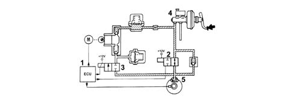
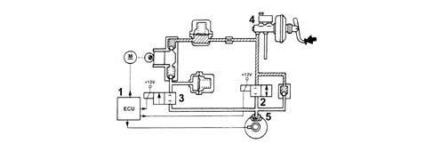
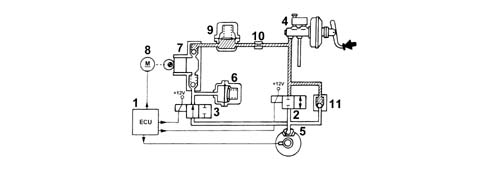
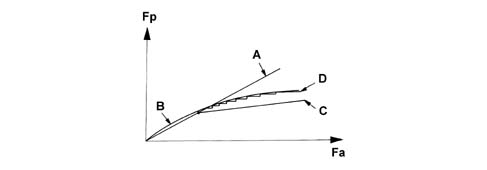

Introduction - A(B.S. ANTI-LOCK BRAKING SYSTEM .)
- Path
- Descriptions > 33 BRAKING SYSTEM > 3340 A(B.S. ANTI-LOCK BRAKING SYSTEM .) > Introduction - A(B.S. ANTI-LOCK BRAKING SYSTEM .)
- Kind
- system description
- Applies to
- all engines; all production periods
- Interactive page
- https://sloeber94.github.io/elrnDB-a156/en/#/3239212
Applies to: all engines; production: da 03/02 a 09/03, da 10/03
CONSTRUCTION FEATURES
DESCRIPTION
General characteristics
The A.B.S. system consists of:
- an electronic control unit integrated in the electro-hydraulic control unit
- an electro-hydraulic control unit which modulates the braking pressure via eight solenoid valves, two for each wheel;
- four 'active' type sensors which detect the angular rotation speed of the wheels.
Function check
Operating principle
The electronic control unit processes the signals coming from the active sensors and the brake light switch and implements the modulation of the brake fluid pressure in the following conditions:
- pressure increase stage,
- pressure maintenance stage,
- pressure reduction stage
On versions with automatic transmission, the A.B.S. control unit converses with:
- the engine management control unit,
- the automatic transmission control unit (CAE)
via the CAN line informing them of the speed of the four wheels (A.B.S. active sensors).
The operating logics for the above mentioned control units prevent the sliding of the drive wheels:
- the engine management control unit on petrol versions reduces the advances and closes the throttle opening angle, whilst on JTD versions it intervenes on the injection times;
- the CAE control unit adopts suitable gear change programmed.
This 'anti-slip' function is provided by the ASR or the TCS 3350 DRIVE CONTROL' on versions with manual gearboxes.
Pressure increase stage
With the brake pedal pressure, the electronic control unit (1):
- does not supply the pressurizing solenoid valve (N.A.) (2)
- does not supply the discharge solenoid valve (N.C.) (3).
Therefore, the pressure produced by the brake pump (4) reaches the brake calipers (5) without undergoing variations.

Pressure maintenance stage
The electronic control unit (1):
- supplies the pressurizing solenoid valve (N.A.) (2)
- does not supply the discharge solenoid valve (N.C.) (3).
Therefore, the hydraulic connection between the brake pump (4) and the brake caliper (5) is interrupted.
The pressure in the brake caliper (5) remains constant even if the pressure on the brake pedal increases.

Pressure reduction stage
The electronic control unit (1):
- supplies the pressurizing solenoid valve (N.A.) (2)
- supplies the discharge solenoid valve (N.C.) (3).
The hydraulic connection between the brake pump (4) and the brake caliper (5) is interrupted and the pressurizing solenoid valve (3) opens and places the brake caliper (5) in contact with the low pressure accumulator (6) and the recovery pump (7).
The electronic control unit (1) also supplies the recovery pump (7) drive motor (8) to reintroduce the fluid removed from the brake caliper (5) back into the main circuit.
The fluid passes through the high pressure accumulator (9) and the restricter (10) which have a damping effect.
The system is equipped with a single-acting valve (11) fitted in parallel to the pressurizing valve (2) which allows a rapid reduction in the pressure at the brake caliper (5) when the brake pedal is released.

Ebd function (electronic brake force distribution)
The EBD function controls the distribution of the brake force and therefore replaces the conventional mechanical load proportioning valve making it possible to:
- act only on the rear brake calipers;
- improve the brake force distribution;
- intervene in an optimum manner in all load conditions (static or dynamic), driving conditions (in a straight line or round bends) and condition of the vehicle (tyres, brakes and suspension worn);
- implement a strategy which follows the ideal distribution curve.

Fa - front axle brake force Fp- rear axle brake force A - Distribution curve implemented by the braking system B - Ideal distribution curve C - Distribution curve implemented by the conventional hydraulic load proportioning valve D - Distribution curve implemented by the EDB function
A failure in the EBD function is signalled by the special warning lights 3350 DRIVE CONTROL' coming on simultaneously.
It is therefore necessary to drive the vehicle extremely carefully to the nearest authorized workshop to have the system checked.
Recovery
The electronic control unit is equipped with a safety circuit which has the task of safeguarding the efficiency of the A.B.S. system.
With the ignition key inserted, the safety circuit checks the following for 4 seconds:
- the operation of the electronic control unit;
- activates the solenoid valves to check their operation
- activates the recovery pump to check its operation;
- it checks the active sensor signals.
Each time the vehicle sets off from a stationary position, the safety circuit checks the presence of the active sensor signals.
With the vehicle driving, the safety circuit behaves in the following way:
- it continuously compares the angular speed of the wheels with the reference speed calculated;
- it checks the memory conditions;
- it checks the operation of the two relays and the solenoid valves
- it constantly checks the battery voltage;
- it checks the efficiency of the brake pedal switch.
If the safety circuit has detected one or more irregularities with the system components during the checking stage it behaves in the following way:
- it switches off the A.B.S. system guaranteeing, however, the operation of the conventional braking system.
- it signals the irregular condition to the driver by the warning light in the instrument panel coming on.